TRADICIÓN E INNOVACIÓN, I
Segunda mitad del siglo XV en Italia
Los nuevos descubrimientos realizados por los artistas italianos y flamencos en la primera mitad del siglo XV crearon gran agitación en toda Europa. Pintores y patrocinadores a la par fueron fascinados por la idea de que el arte no sólo podía servir para plasmar temas sagrados de manera sugestiva, sino también para reflejar un fragmento del mundo real. Tal vez el más inmediato resultado de esta gran revolución en arte consistió en que los artistas de todas partes comenzaron a experimentar y procurar nuevos efectos sorprendentes. Este espíritu de aventura que sostuvo el arte del siglo XV señala la verdadera ruptura con el medievo.
Existe una consecuencia de esta ruptura que debemos considerar ante todo. Hasta alrededor de 1400 el arte, en diferentes partes de Europa, se había desarrollado siguiendo líneas análogas. Recordemos que el estilo de los pintores y escultores góticos de aquella época es conocido con el nombre de estilo internacional porque las miras de los maestros predominantes en Francia, Alemania y Borgoña eran, en conjunto, muy parecidas. Claro está que existieron diferencias nacionales a lo largo de todo el medievo —por ejemplo, las existentes entre Francia e Italia durante el siglo XIII—, pero éstas no fueron, en conjunto, muy importantes. No se referían únicamente al terreno del arte, sino también al del saber e incluso al de la política. Todos los hombres cultos del medievo hablaban y escribían latín, y les daba lo mismo enseñar en la Universidad de París que en las de Padua o de Oxford.
Los nobles de la época participaban de los ideales de la caballería; su lealtad a su rey o a sus caudillos feudales no implicaba que se considerasen a sí mismos como los campeones de un pueblo o nación en particular. Todo esto cambió gradualmente hacia finales del medievo, cuando las ciudades, con sus burgueses y comerciantes, se fueron haciendo cada vez más importantes que los castillos de los barones. Los mercaderes hablaban su lenguaje nativo y se aunaban contra cualquier competidor intruso o extranjero. Cada ciudad estaba orgullosa y celosa de su propia posición y de sus privilegios comerciales e industriales. En el medievo, un buen maestro podía viajar de un lugar de construcción a otro, o ser recomendado por un monasterio a otro, no causándole ninguna preocupación tener que confesar su nacionalidad. Pero tan pronto como las ciudades crecieron en importancia, los artistas, así como los artesanos y todos los trabajadores, se organizaron en gremios que, en muchos aspectos, eran semejantes a nuestros sindicatos. Misión suya era vigilar por los privilegios y derechos de sus miembros y asegurar un buen mercado para sus producciones. Para ser admitido en un gremio, el artista tenía que probar que era capaz de un cierto grado de competencia, es decir, que era, en realidad, un maestro en su arte. Entonces se le permitía abrir un taller, emplear aprendices y aceptar encargos de retablos, retratos, cofres pintados, banderas, estandartes o cualquier otra obra semejante.
Los gremios y corporaciones eran por lo general organizaciones ricas que poseían voz y voto en el gobierno de la ciudad y que no sólo contribuían a que ésta prosperase, sino que también se esforzaban en embellecerla. En Florencia y otros lugares, los gremios de orfebres, tejedores, curtidores, etcétera, dedicaron parte de sus fondos a la fundación de iglesias, la construcción de casas gremiales y la donación de altares y capillas. En este aspecto, hicieron mucho por el arte. Por otro lado, vigilaban celosamente los intereses de sus miembros, dificultando que los artistas extranjeros pudieran hallar empleo allí. Sólo los artistas más famosos conseguían romper en ocasiones esta resistencia y trasladarse tan libremente como en la época en que se construyeron las grandes catedrales.
Todo ello está relacionado con la historia del arte, porque debido al desarrollo de las ciudades, el estilo internacional fue tal vez el último estilo de este tipo que haya visto Europa. En el siglo XV el arte se disgregó en una serie de escuelas distintas; casi cada ciudad grande o pequeña en Italia, Flandes y Alemania tuvo su propia escuela de pintura. «Escuela» es una denominación un tanto equívoca. Por entonces no existían escuelas de arte en las que los jóvenes estudiantes siguieran cursos. Si un muchacho decidía que le gustaría llegar a ser pintor, su padre le colocaba de aprendiz desde muy corta edad en casa de uno de los principales maestros de la ciudad. Por lo general, tenía que vivir junto a él, hacía los recados de la familia del maestro y procuraba hacerse útil por todos los medios. Una de sus primeras tareas sería moler los colores, o ayudar a la preparación de las tablas o de las telas que el maestro querría usar. Gradualmente obtendría de éste algún trabajo menor, como la pintura de una enseña. Más tarde, cuando el maestro se hallara muy atareado, pediría al alumno que le ayudase en la terminación de algunos pormenores poco importantes de obras mayores: pintar el fondo señalado por el maestro sobre la tela, concluir el vestido de algunos personajes de una escena. Si mostraba talento y sabía imitar la manera de su maestro a la perfección, el joven recibiría poco a poco tareas más importantes que realizar bajo su supervisión. Éstas eran, pues, las escuelas de pintura del siglo XV. Fueron escuelas excelentes, y hay muchos pintores de hoy día que desearían haber recibido una instrucción semejante. El modo de transmitir los maestros de una ciudad su habilidad y experiencia a la generación joven explica, también, por qué las escuelas de pintura desarrollaron en esas ciudades una individualidad propia tan manifiesta. Puede reconocerse si un cuadro del siglo XV procede de Florencia o Siena, de Dijón o Brujas, de Colonia o Viena.
Con el propósito de tener un punto de mira ventajoso desde el que poder dominar esta variedad inmensa de maestros, escuelas y experiencias, será mejor que nos volvamos hacia Florencia, donde comenzó la gran revolución artística. Es fascinante observar cómo la segunda generación, la que siguió a Brunelleschi, Donatello y Masaccio, trató de hacer uso de los descubrimientos de éstos para aplicarlos a todas las tareas que hubiera que realizar. Esto no siempre fue fácil. Los principales encargos que se les hicieron, después de todo, permanecieron inalterables desde el comienzo del período. A veces, los nuevos y revolucionarios métodos parecían chocar con los encargos tradicionales. Considérese el caso de la arquitectura: la idea de Brunelleschi había sido introducir formas de edificios clásicos, columnas, tímpanos y cornisas copiadas por él de las ruinas romanas. Él empleó esas formas en las iglesias. Sus sucesores estaban afanosos por emularle. La ilustración 162 muestra una iglesia concebida por el arquitecto florentino León Battista Alberti (1404-1472), quien planeó su fachada como un gigantesco arco de triunfo a la manera romana (ilustración 74). Pero ¿cómo se aplicaría el mismo programa a una casa habitable corriente, en una calle de la ciudad? Los palacios y moradas tradicionales no podían ser construidos a la manera de templos. No habían sobrevivido edificios particulares de los tiempos romanos, y aunque así hubiera sido, las necesidades y las costumbres habían cambiado tanto que aquéllos hubieran podido proporcionar muy poca orientación. El problema, pues, era hallar un compromiso, una conciliación entre la casa tradicional, con paredes y ventanas, y la forma clásica que Brunelleschi había enseñado a usar a los arquitectos. Fue Alberti quien encontró la solución que ha seguido influyendo hasta nuestros días. Al construir un palacio para la opulenta familia florentina de comerciantes Rucellai (ilustración 163), diseñó un edificio corriente de tres pisos. Existe poca semejanza entre esta fachada y cualquier ruina clásica; y sin embargo, Alberti se adhirió al programa de Brunelleschi y empleó formas clásicas para decorarla. En lugar de construir columnas o semicolumnas, cubrió la casa con una red de pilastras y entablamentos que sugieren un orden clásico, sin variar la estructura del edificio. Es fácil ver dónde aprendió Alberti este principio. Recordemos el Coliseo romano (ilustración 73), en el cual se aplicaron varios órdenes griegos a los diversos pisos. Aquí también el piso inferior es una adaptación del orden dórico, habiendo asimismo arcos entre los pilares. Pero aunque, de este modo, Alberti había logrado dar un nuevo aspecto al viejo palacio, transformando las formas romanas, no por ello rompió del todo con las tradiciones góticas. No tenemos sino que comparar las ventanas de este palacio con las de la fachada de Notre-Dame de París (ilustración 125) para descubrir una sorprendente similitud. Alberti no hizo más que traducir un diseño gótico a unas formas clásicas, suavizando el «bárbaro» arco apuntado y utilizando los elementos del orden clásico en un contexto tradicional.
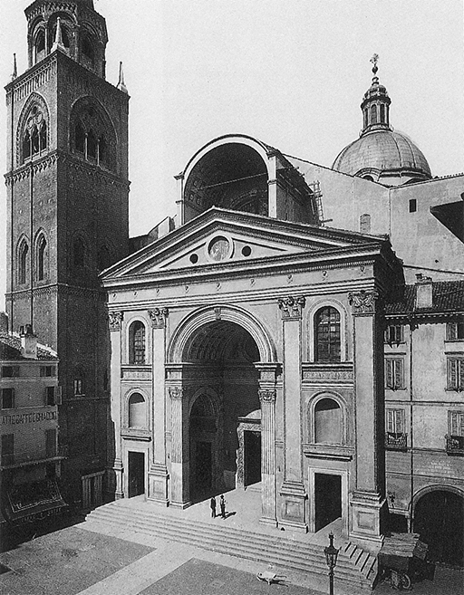
162 León Battista Alberti, Iglesia de S. Andrea, Mantua, h. 1460. Iglesia renacentista.
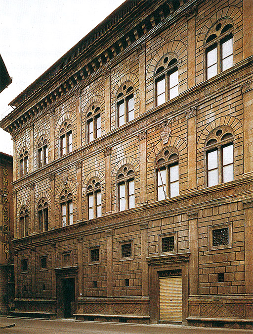
163 León Battista Alberti, Palacio Rucellai, Florencia, h. 1460.
Este logro de Alberti es característico. Los pintores y escultores florentinos del siglo XV también se hallaron con frecuencia en una situación en la que tenían que adaptar el nuevo proyecto a una tradición antigua. La mezcla entre lo nuevo y lo viejo, entre tradiciones góticas y formas modernas, es característica de muchos de los maestros de mediados del siglo.
El mayor de estos maestros florentinos que consiguió reconciliar las nuevas aportaciones con la tradición antigua fue un escultor de la generación de Donatello, Lorenzo Ghiberti (1378-1455). La ilustración 164 muestra uno de sus relieves para la misma pila de Siena para la que hizo Donatello El festín de Herodes (ilustración 152). En la obra de Donatello podríamos decir que todo era nuevo. La de Ghiberti parece mucho menos sorprendente a primera vista. Advertimos que la distribución de la escena no es muy distinta de la empleada por el famoso fundidor de Lieja del siglo XII (ilustración 118): el Cristo en el centro, teniendo a un lado a san Juan Bautista, a los ángeles al otro, y al Dios y la paloma del Espíritu Santo descendiendo del cielo. Hasta en la manera de estar tratados los detalles, la obra de Ghiberti recuerda las de sus predecesores medievales: el amoroso cuidado con que distribuye los pliegues de los trajes puede recordarnos una obra como la Virgen del orfebre del siglo XIV que hemos visto en la ilustración 139. Y sin embargo, el relieve de Ghiberti es tan vigoroso y convincente como el de su compañero Donatello. También él había aprendido a caracterizar cada figura y a hacernos comprender la parte que desempeña en el conjunto: la belleza y humildad del Cristo, el Cordero de Dios, la solemne y enérgica actitud de san Juan, el enflaquecido profeta del desierto, y el celestial acompañamiento de los ángeles que se contemplan silenciosos entre sí, alegres y maravillados. Mientras que la nueva modalidad dramática de Donatello, al representar la escena sagrada, subvierte la nítida distribución que había sido orgullo de otra época, Ghiberti procura mantenerse contenido y lúcido. No nos proporciona una idea del espacio real, como se propuso Donatello. Prefiere ofrecernos tan sólo una alusión a la profundidad, dejando que las figuras principales se destaquen claramente contra un fondo neutral.
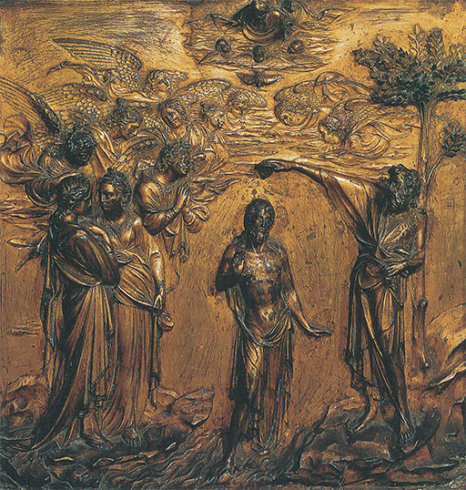
164 Lorenzo Ghiberti, El bautismo del Cristo, 1427. Bronce dorado, 60 x 60 cm; relieve del frontal del baptisterio, catedral de Siena.
Del mismo modo que Ghiberti permaneció fiel a algunas ideas del arte gótico, sin rechazar el empleo de los nuevos descubrimientos de su siglo, el pintor Fra Angélico (hermano Angélico), de Fiésole, junto a Florencia (1387-1455), aplicó los nuevos métodos de Masaccio principalmente con objeto de expresar las ideas tradicionales del arte religioso. Fra Angélico era un fraile dominico: los frescos que pintó en su monasterio florentino de San Marcos, alrededor de 1440, se cuentan entre las más hermosas de sus obras. Pintó una escena sacra en cada una de las celdas y al final de cada corredor, y cuando se pasea de una a otra en la quietud del viejo edificio se experimenta algo del espíritu en el que fueron concebidas esas obras. La ilustración 165 muestra un cuadro de la anunciación que realizó en una de las celdas. Observamos al momento que el arte de la perspectiva no ofrecía dificultades para él. El claustro donde está arrodillada la Virgen está representado de manera tan convincente como la bóveda del famoso fresco de Masaccio (ilustración 149). Sin embargo, se ve claramente que el principal propósito de Fra Angélico no era «horadar la pared». Al igual que Simone Martini y Lippo Memmi en el siglo XIV (ilustración 141), sólo se propuso representar la escena religiosa en toda su belleza y simplicidad. Apenas hay movimiento o sugestión de sólidos cuerpos reales en la pintura de Fra Angélico. Pero me parece mucho más emotiva por su humildad, la de un gran artista que deliberadamente renuncia a cualquier demostración de modernidad a pesar de su profunda inteligencia respecto a los problemas que Brunelleschi y Masaccio introdujeron en el arte.
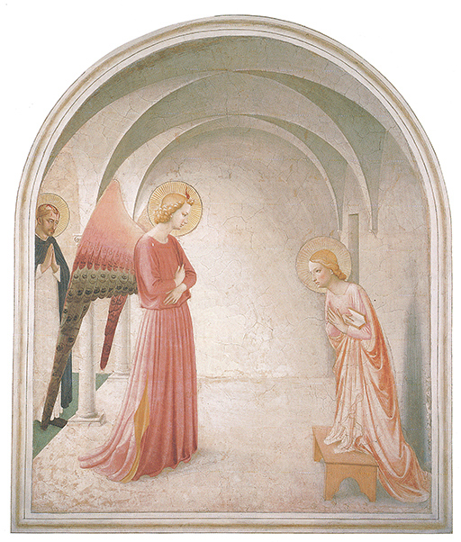
165 Fra Angélico, La anunciación, h. 1440. Fresco, 187 x 157 cm; Museo de San Marcos, Florencia.
Podemos estudiar la fascinación de estos problemas, y también su dificultad, en la obra de otro florentino, el pintor Paolo Uccello (1397-1475), la mejor conservada de las cuales es una batalla que figura en la National Gallery de Londres (ilustración 166). El cuadro se pintó probablemente para ser colocado encima del zócalo (entablamento de la parte baja) de la pared de un aposento del Palacio Médicis, palacio urbano de una de las familias de mercaderes florentinos más poderosas y opulentas. Representa un episodio de la historia de Florencia del que aún se hablaba mucho cuando se realizó la obra: la batalla de San Romano en 1432, cuando las tropas florentinas batieron a sus rivales en uno de los muchos enfrentamientos que tuvieron lugar entre facciones italianas. A primera vista, el cuadro puede parecer bastante medieval. Esos caballeros con sus armaduras y sus largas y pesadas lanzas, cabalgando como en un torneo, pueden recordarnos una novela medieval de caballería; no ha de sorprendernos, al pronto, como muy moderno el modo de estar pintada la escena. Tanto los hombres como los caballos parecen un poco de madera, como si fueran juguetes; en su conjunto, el vistoso cuadro parece hallarse muy lejos de la realidad de la guerra. Pero si nos preguntamos por qué esos caballos parecen como de tiovivo, y la totalidad de la escena casi como una función de títeres, haremos un curioso descubrimiento. Sucede así precisamente porque el pintor se hallaba tan fascinado por las nuevas posibilidades de su arte que hizo cuanto pudo por que sus figuras se recortasen en el espacio como si hubieran sido talladas más que pintadas. Se decía de Uccello que el descubrimiento de la perspectiva le impresionó tanto que pasó noches y días dibujando objetos escorzados y planteándose a sí mismo nuevos problemas. Sus compañeros acostumbraban decir que se hallaba tan absorbido por esos estudios que apenas levantaba la cabeza cuando su mujer le avisaba que la comida se hallaba dispuesta, exclamando: «¡Qué cosa tan bella es la perspectiva!» En el cuadro podemos ver algo de este arrobamiento. Evidentemente, Uccello se tomó mucho trabajo para reproducir las diversas piezas de la armadura que están tendidas en el suelo en correcto escorzo. Pero, sin duda, de lo que estaba más orgulloso era del guerrero caído en tierra, cuya escorzada representación debió ser muy difícil (ilustración 167). No se había pintado una figura semejante antes de él, y aunque más bien parece pequeña en proporción con las otras, podemos imaginarnos la sorpresa que causaría. En todo el cuadro podemos hallar testimonios del interés que se tomó Uccello por la perspectiva, así como de la fascinación que ésta ejerció en su espíritu. Hasta las quebradas lanzas que yacen en tierra están situadas de modo que apunten hacia su común punto de fuga. Esta matemáticamente precisa colocación es en cierto modo responsable de la apariencia de artificialidad del escenario en que parece desarrollarse la batalla. Si retrocedemos de esta fastuosidad caballeresca a los caballeros del cuadro de Van Eyck (ilustración 137) y a las miniaturas de los De Limburgo (ilustración 144) que hemos comparado con él, advertiremos más claramente lo que Uccello debía a la tradición gótica y cómo transformó esa herencia. Van Eyck, en el norte, modificó las formas del estilo internacional aumentando los pormenores mediante la observación y tratando de copiar minuciosamente las superficies de las cosas. Uccello eligió más bien el criterio opuesto. Por medio de su amado arte de la perspectiva, trató de construir un escenario verosímil, sobre el que las figuras apareciesen sólidas y reales. Sólidas, indudablemente lo parecen, pero el efecto que producen nos recuerda un poco el de las fotografías estereoscópicas que se observan a través de dos lentes. Uccello no había aún aprendido a emplear los efectos de la luz, la sombra y el aire para suavizar los duros perfiles de una reproducción estrictamente en perspectiva. Pero si nos situamos frente al cuadro tal como se halla en la National Gallery, no sentimos nada anormal en él, pues a pesar de su obsesión por la geometría aplicada, Uccello era un verdadero artista.
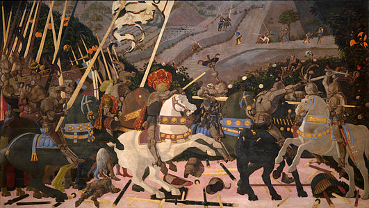
166 Paolo Uccello, La batalla de San Romano, h. 1450. Probablemente, de una habitación del Palacio Médicis, Florencia; óleo sobre tabla, 181,6 x 320 cm; National Gallery, Londres.
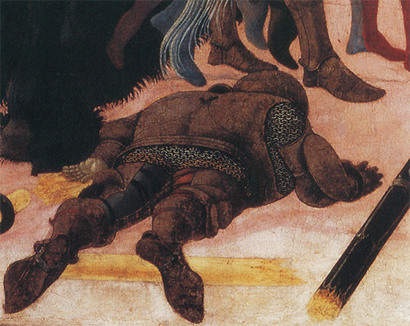
167 Detalle de la ilustración 166.
En tanto que pintores como Fra Angélico podían hacer uso de lo nuevo sin alterar el espíritu de lo viejo; mientras Uccello, a su vez, quedaba completamente cautivado por los nuevos problemas, artistas menos acendrados y ambiciosos utilizaron los nuevos procedimientos sin inquietarse demasiado acerca de sus dificultades. El público probablemente prefirió a los maestros que le ofrecían lo mejor de los dos mundos. Así, el encargo de pintar las paredes de la capilla privada del Palacio Médicis recayó sobre Benozzo Gozzoli (h. 1421-1497), discípulo de Fra Angélico pero, evidentemente, hombre de muy distinto criterio artístico. Gozzoli cubrió los muros de la capilla con una representación de la cabalgata de los tres reyes magos, haciéndoles viajar con un atuendo verdaderamente regio a través de un hermoso paisaje (ilustración 168). El episodio bíblico le dio ocasión para exhibir ricos primores y suntuosos ropajes, un maravilloso mundo lleno de encanto y alegría. Hemos visto que esta afición a representar la fastuosidad de los nobles pasatiempos se desarrolló en Borgoña (ilustración 144), en cuya comarca los Médicis establecieron estrechas relaciones. Gozzoli parece querer demostrar que los nuevos recursos podían ser usados para hacer esas alegres representaciones de la vida contemporánea más vivas aún y deliciosas. No tenemos ninguna razón para discutírselo. La vida de la época era, en realidad, tan pintoresca y llena de colorido que debemos estar agradecidos a esos maestros menores que han conservado un recuerdo de esas delicias en sus obras, y todo el que vaya a Florencia no debe desperdiciar el placer de una visita a esta pequeña capilla en la que parece quedar algo aún del sabor y el aroma de un modo más alegre de vivir.
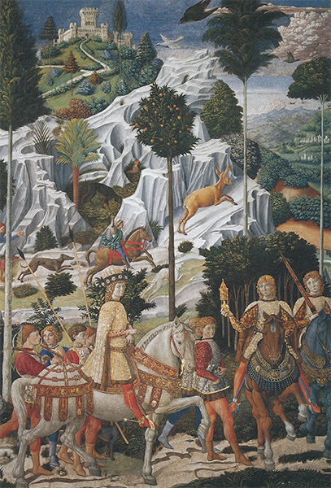
168 Benozzo Gozzoli, El viaje de los reyes magos a Belén, h. 1459-1463. Fresco, detalle; capilla del Palacio Médicis-Riccardi, Florencia.
Entre tanto, otros pintores, instalados en ciudades al norte y al sur de Florencia, asimilaron el mensaje del nuevo arte de Donatello y Masaccio, y tal vez lo aprovecharon más ávidamente aún que los propios florentinos. Allí estaba Andrea Mantegna (1431-1506), quien trabajó en un principio en la famosa ciudad universitaria de Padua, y después en la corte de los señores de Mantua, ciudades las dos del norte de Italia. En una iglesia de la primera, muy cercana a la capilla en la que Giotto pintó sus famosos frescos, Mantegna realizó una serie de pinturas murales con temas de la leyenda de Santiago apóstol. La iglesia sufrió graves daños por los bombardeos durante la última guerra, y muchas de esas maravillosas pinturas de Mantegna fueron destruidas. Es una pérdida lamentable porque seguramente pertenecían a una de las más grandes obras de arte de todos los tiempos. Una de ellas (ilustración 169) muestra a Santiago escoltado hasta el lugar de su ejecución. De la misma manera que Giotto o Donatello, Mantegna trató de imaginar con toda claridad cómo debió haber sido realmente la escena, pero el criterio acerca de lo que llamaba realidad había alcanzado mucha mayor exactitud que la que tuvo en la época de Giotto. Lo que preocupó a este último fue el sentido interior del tema: el modo en que unos hombres y mujeres habrían reaccionado y se conducirían en una situación dada. Mantegna se interesó también por las circunstancias externas. Sabía que Santiago había vivido en la época de los emperadores romanos, y estaba deseoso de reconstruir la escena tal como efectivamente en aquel tiempo pudo haber acaecido. La puerta de la ciudad a través de la que acaba de ser conducido Santiago es un arco de triunfo romano, y todos los soldados de la escolta aparecen vestidos y armados como legionarios de Roma, tal como los hemos visto representados en los monumentos clásicos auténticos. Este cuadro no sólo nos recuerda la escultura antigua por esos pormenores de las vestiduras y la ornamentación. Toda la escena respira el espíritu del arte romano en su rigurosa simplicidad y su austera grandeza. La diferencia, ciertamente, entre los frescos florentinos de Benozzo Gozzoli y las obras de Mantegna, que fueron pintadas aproximadamente por los mismos años, difícilmente podría ser más acusada. En la alegre fastuosidad de Gozzoli reconocemos un retorno a los gustos del estilo gótico internacional. Mantegna, por su parte, prosigue el camino allí donde lo había dejado Masaccio. Sus figuras son tan estatuarias e impresionantes como las de este último. Al igual que él, emplea el nuevo arte de la perspectiva con vehemencia, pero no lo explota, como hizo Uccello, para extremar los efectos que podrían obtenerse mediante su magia. Mantegna emplea la perspectiva más bien para crear un escenario sobre el que las figuras parecen estar y moverse como seres sólidos y tangibles. Las distribuye como un diestro director de escena, para que reflejen la significación del momento y el curso de un episodio. Podemos ver claramente qué está ocurriendo: la procesión que escolta a Santiago se ha detenido un momento porque uno de los perseguidores se ha arrepentido y se ha postrado a los pies del santo para recibir su bendición. El santo se ha vuelto sosegadamente para bendecirle, mientras los soldados romanos se detienen y observan, uno de ellos impasiblemente, y el otro levantando su mano en un ademán expresivo que parece dar a entender que también él está emocionado. El arco enmarca esta escena y la separa del tumulto de la masa de espectadores que es echada hacia atrás por los guardias.
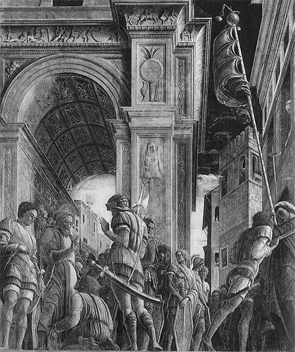
169 Andrea Mantegna, Santiago camino de su ejecución, h. 1455. Fresco; destruido; antiguamente, iglesia de los Eremitani, Padua.
Mientras que Mantegna aplicaba así los nuevos métodos del arte en el norte de Italia, otro gran pintor, Piero della Francesca (1416?-1492), hizo lo mismo en la región sur de Florencia, en las ciudades de Arezzo y Urbino. Al igual que los frescos de Gozzoli y Mantegna, los de Piero della Francesca fueron pintados muy poco después de mediado el siglo XV, aproximadamente en la generación inmediata a la de Masaccio. El episodio de la ilustración 170 muestra el sueño que llevó al emperador Constantino a aceptar la fe cristiana. Antes de una batalla decisiva con su rival, soñó que un ángel le mostraba la cruz y decía: «Bajo este signo vencerás.» El fresco de Della Francesca representa la escena en la noche anterior a la batalla en el campamento del Emperador. Vemos abierta la tienda donde Constantino duerme en su lecho de campaña. Su guarda está sentado junto a él, mientras dos centinelas le dan también escolta. Esta tranquila escena nocturna se ha visto iluminada de pronto por un rayo de luz al descender un ángel del cielo sosteniendo el símbolo de la cruz en su mano extendida. Como en Mantegna, algo nos hace pensar en una escena teatral. Hay un tranquilo escenario señalado claramente, y nada distrae nuestra atención de la acción principal. Al igual que Mantegna, Della Francesca se esforzó en pintar vestiduras de legionarios romanos y, como él, prescindió de los alegres y abigarrados pormenores que introdujo Gozzoli en sus escenas. También Piero della Francesca dominaba por entero el arte de la perspectiva, y la manera con que muestra la figura del ángel en escorzo es tan atrevida que casi puede prestarse a confusiones, especialmente en una reproducción pequeña. Pero a los artificios geométricos con los cuales sugerir el espacio de la escena, agregaría otro nuevo de igual importancia: el tratamiento de la luz. Los artistas medievales apenas tuvieron noción alguna de la luz. Sus planas figuras no proyectaban sombras. Masaccio fue un precursor a este respecto: las redondas y sólidas figuras de sus cuadros están enérgicamente modeladas en luz y sombra (ilustración 149). Pero nadie vio la inmensidad de estas nuevas posibilidades más claramente que Piero della Francesca. En su cuadro, la luz no solamente ayuda a modelar las formas de las figuras, sino que se equipara con la perspectiva para dar la ilusión de profundidad. El soldado que se halla en primer término es como una silueta oscura ante la claridad que ilumina la abertura de la tienda. Notamos de este modo la distancia que separa a los soldados del escalón donde está sentado el guarda, cuya figura, a su vez, se destaca en el rayo de luz que emana del ángel. Se nos hace percibir la redondez de la tienda, y el hueco que ésta enmarca, lo mismo por medio de la luz que por el escorzo y la perspectiva. Pero Della Francesca deja que la luz y la sombra produzcan un milagro todavía mayor: que contribuyan a crear la misteriosa atmósfera de la escena, en la profundidad de la noche, cuando el Emperador tuvo una visión que cambiaría el curso de la historia. Esta calma y simplicidad impresionante hicieron de Piero della Francesca quizá el más grande heredero de Masaccio.
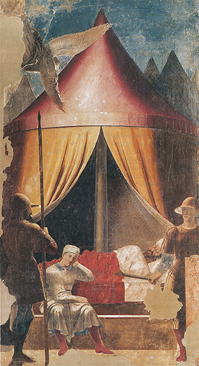
170 Piero della Francesca, El sueño de Constantino, h. 1460. Fresco, detalle; iglesia de S. Francesco, Arezzo.
Mientras éstos y otros artistas aplicaban los inventos de la gran generación de maestros florentinos, en Florencia los artistas se iban dando cuenta cada vez más de los nuevos problemas a que aquéllos daban lugar. En el primer momento del triunfo pudieron creer que el descubrimiento de la perspectiva y el estudio de la naturaleza resolverían todas las dificultades que el arte ofrecía. Pero no debemos olvidar que el arte es cosa muy distinta de la ciencia. Los propósitos del artista, sus recursos técnicos, pueden desarrollarse, evolucionar, pero el arte en sí apenas puede decirse que progrese, en el sentido en que progresa la ciencia. Cada descubrimiento en una dirección crea una nueva dificultad en alguna otra. Recordemos que los pintores medievales desconocían las reglas correctas del dibujo, pero que su propia ignorancia les permitía distribuir sus figuras sobre el cuadro de un modo orientado a la creación de un esquema perfecto. El calendario ilustrado del siglo XII (ilustración 120), o el relieve Tránsito de la Virgen, del XIII (ilustración 129), constituyen ejemplos de esta habilidad. Incluso pintores del siglo XIV, como Simone Martini y Lippo Memmi (ilustración 141) aún eran capaces de distribuir sus figuras de modo que formaran un armónico diseño sobre un fondo de oro. Tan pronto como fue adoptado el nuevo concepto de hacer del cuadro un espejo de la realidad, el problema de cómo distribuir las figuras ya no fue fácil de resolver. En la realidad éstas no se agrupan armónicamente, no destacan con claridad sobre un fondo neutro. En otras palabras, existía el peligro de que la nueva facultad del artista arruinara su más preciado don de crear un conjunto agradable y satisfactorio. El problema se volvió particularmente serio cuando el artista se enfrentó con tareas como las de realizar grandes retablos y otras semejantes. Estas pinturas tenían que ser vistas desde lejos y encajar dentro del marco arquitectónico del conjunto de la iglesia. Además, debían presentar el tema religioso a los fieles en lineamientos precisos y elocuentes. La ilustración 171 muestra cómo un artista florentino de la segunda mitad del siglo XV, Antonio Pollaiuolo (1432?-1498), trató de resolver el nuevo problema haciendo un cuadro a la par correcto de dibujo y armónico de composición. Constituye uno de los primeros intentos de esta clase para resolver dicho problema, no sólo por medio del tacto e instintivamente, sino también mediante la aplicación de normas concretas. Puede no ser en conjunto un intento logrado, ni una obra muy atractiva, pero muestra con claridad cuán deliberadamente los artistas florentinos se propusieron resolver esta dificultad. El cuadro representa el martirio de san Sebastián, que aparece amarrado a un poste rodeado de seis verdugos. Este grupo forma un esquema muy equilibrado en forma de triángulo agudo. El sayón de cada lado se corresponde con una figura análoga en el otro.
La colocación, en efecto, es tan clara y simétrica que casi resulta demasiado rígida. El pintor advirtió evidentemente esta desventaja, por lo que trató de introducir alguna diversidad. Uno de los sayones que ajustan sus ballestas está visto de frente, mientras que otro se halla de espaldas, y lo mismo sucede con las figuras erectas. De tan sencilla manera, el pintor se propuso suavizar la rígida simetría de la composición e introducir un sentido de movimiento y contramovimiento muy semejante al de una pieza musical. En el cuadro de Pollaiuolo este recurso aún está empleado conscientemente, y su composición parece en cierto modo un ejercicio. Podemos imaginarnos que empleó el mismo modelo visto desde diferentes lados para las figuras correspondientes, y notamos que, orgulloso de su dominio de los músculos y movimientos, casi echó en olvido el verdadero asunto del cuadro. Por lo demás, Pollaiuolo apenas consiguió triunfar en lo que se propuso. Es cierto que aplicó el nuevo arte de la perspectiva a una maravillosa representación del paisaje toscano en el fondo, pero el tema principal y ese fondo no ligan realmente entre sí. No existe continuidad entre la colina del primer plano, donde se realiza el martirio, y el escenario de la lejanía. Casi sorprende que Pollaiuolo no hubiera preferido situar su composición contra algo semejante a un fondo dorado o neutral, pero advertimos que este recurso le estaba vedado. Figuras tan vigorosas y llenas de vida hubieran parecido desplazadas sobre un fondo dorado.
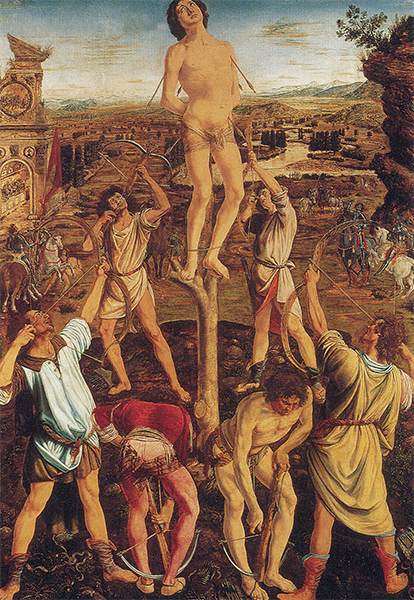
171 Antonio Pollaiuolo, El martirio de san Sebastián, h. 1475. Retablo; óleo sobre tabla, 291,5 x 202,6 cm; National Gallery, Londres.
Una vez que el arte eligió el camino de rivalizar con la naturaleza, ya no podía retroceder. El cuadro de Pollaiuolo pone en evidencia la índole del problema que los artistas del siglo XV debieron plantearse en sus estudios. El arte italiano culminó en la generación siguiente, después de haber hallado solución a aquél.
Entre los artistas florentinos de la segunda mitad del siglo XV que se esforzaron en solucionar dicho problema se encuentra el pintor Sandro Botticelli (1446-1510). Uno de sus cuadros más famosos representa, no una leyenda cristiana, sino un mito clásico: El nacimiento de Venus (ilustración 172). Los poetas griegos y romanos fueron conocidos a lo largo de todo el medievo, pero solamente en la época del Renacimiento, cuando los italianos trataron de recuperar la primitiva gloria de Roma, tales mitos se hicieron populares entre la gente instruida. Para ésta, la mitología de los tan admirados griegos y latinos era algo más que un alegre y delicioso cuento de hadas. Esos hombres estaban tan convencidos de la superior sabiduría de los antiguos que creían que todas las leyendas clásicas debían de contener alguna verdad misteriosa y profunda. La persona que encargó este cuadro a Botticelli para su casa de campo fue un miembro de la rica y poderosa familia Médicis. Él mismo, o uno de sus amigos cultos, explicaría probablemente al pintor lo que se sabía acerca de cómo representaron los antiguos a Venus surgiendo del mar. Para esas personas, la narración de su nacimiento constituía el símbolo del misterio por medio del cual el divino mensaje de la belleza advino al mundo. Hay que imaginarse que el pintor pondría manos a la obra reverentemente para representar este mito de una manera digna. La acción del cuadro se advierte en seguida. Venus ha emergido del mar sobre una concha, que es empujada a la playa por el soplo de unos dioses alados entre una lluvia de rosas. Dado que ella está a punto de dar un paso hacia la arena, una de las Horas o Ninfas la recibe con una capa púrpura. Botticelli triunfa allí donde fracasara Pollaiuolo. Su cuadro forma, en efecto, un esquema perfectamente armónico. Pero Pollaiuolo pudo haber dicho que Botticelli lo consiguió sacrificando algunos de los recursos que él trató severamente de respetar. Las figuras de Botticelli parecen menos sólidas; no están tan correctamente dibujadas como las de Pollaiuolo o Masaccio. Los graciosos movimientos y las líneas melódicas de su composición recuerdan la tradición gótica de Ghiberti y Fra Angélico, incluso tal vez el arte del siglo XIV, en obras tales como La anunciación de Simone Martini y Lippo Memmi (ilustración 141) o la del orfebre francés (ilustración 139), en las cuales observamos el suave cimbreo del cuerpo y la exquisita caída de los ropajes. La Venus de Botticelli es tan bella que no nos damos cuenta del tamaño antinatural de su cuello, de la pronunciada caída de sus hombros y del extraño modo en que cuelga del torso el brazo izquierdo. O, más bien, diríamos que esas libertades que Botticelli se tomó con la naturaleza, con objeto de conseguir una silueta graciosa, realzan la belleza y la armonía del dibujo, ya que hacen más intensa la impresión de un ser infinitamente tierno y delicado conducido a nuestras playas como un don del cielo.
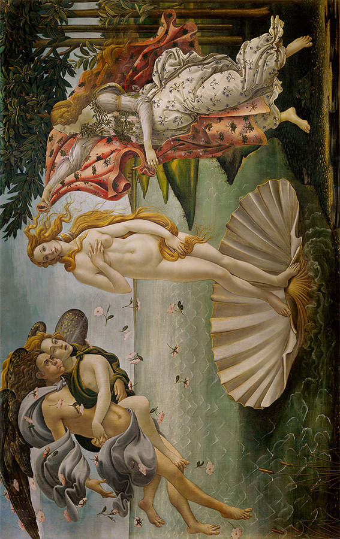
172 Sandro Botticelli, El nacimiento de Venus, h. 1485. Temple sobre lienzo, 172,5 x 278,5 cm; Galería de los Uffizi, Florencia.
El rico comerciante que encargó este cuadro a Botticelli, Lorenzo Pierfrancesco de Médicis, fue también el protector de un florentino que estaba destinado a darle su nombre a un continente, Amerigo (Américo) Vespucci, quien, estando a su servicio, navegó hasta el nuevo mundo. Hemos llegado al período elegido por los historiadores posteriores como terminación oficial del medievo. Recordemos que en el arte italiano existieron varios acontecimientos que han podido ser descritos como el principio de una nueva época: los descubrimientos de Giotto, hacia 1300; los de Brunelleschi, hacia 1400. Pero tal vez más importante aún que todas esas revoluciones en los métodos fue un cambio gradual que sobrevino en el arte en el transcurso de esos dos siglos. Se trata de un cambio que es más fácil de sentir que de describir. Una comparación de las miniaturas medievales de libros, tratadas en capítulos anteriores (ilustraciones 131 y 140), con un ejemplo del arte florentino que se inicia alrededor de 1475 (ilustración 173), puede dar una idea del diferente espíritu con que el mismo arte puede ser empleado. No es que los maestros florentinos careciesen de respeto o de devoción. Pero las mismas posibilidades que el arte había conquistado hicieron imposible para ellos considerarlo tan sólo como medio para expresar el sentido de un tema religioso. En vez de ello, desearon aplicar esas posibilidades en una ostentación de lujo y de riqueza. Esta función del arte —la de adherirse a la belleza y los dones de la vida— nunca fue olvidada del todo. En el período que denominamos Renacimiento italiano destacó constantemente en primer lugar.
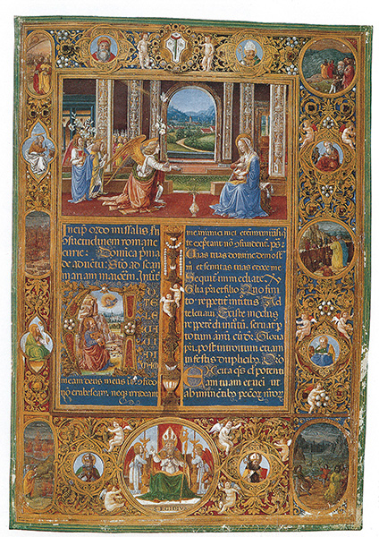
173 Gherardo di Giovanni, La anunciación y escenas de Divina comedia, de Dante, h. 1474-1476. Página de un misal; Museo Nacional del Bargello, Florencia.
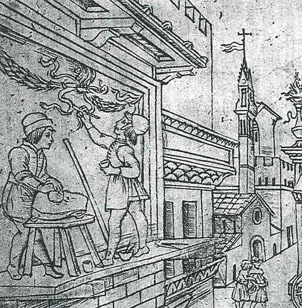
Pintura al fresco y moledura de colores, h. 1465. De una estampa florentina que muestra los quehaceres de los nacidos bajo el signo de Mercurio.